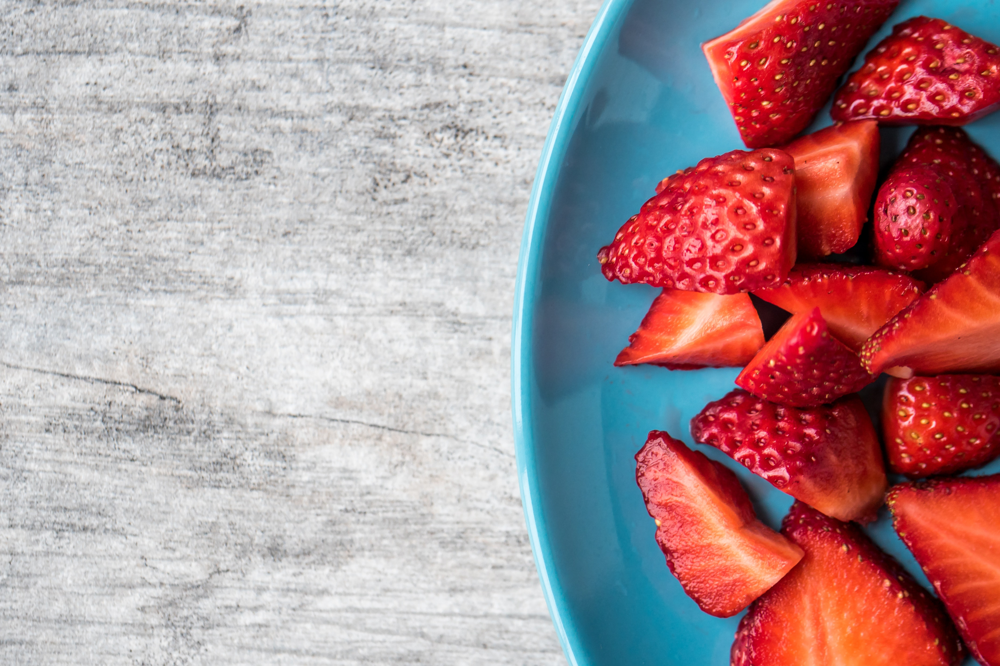
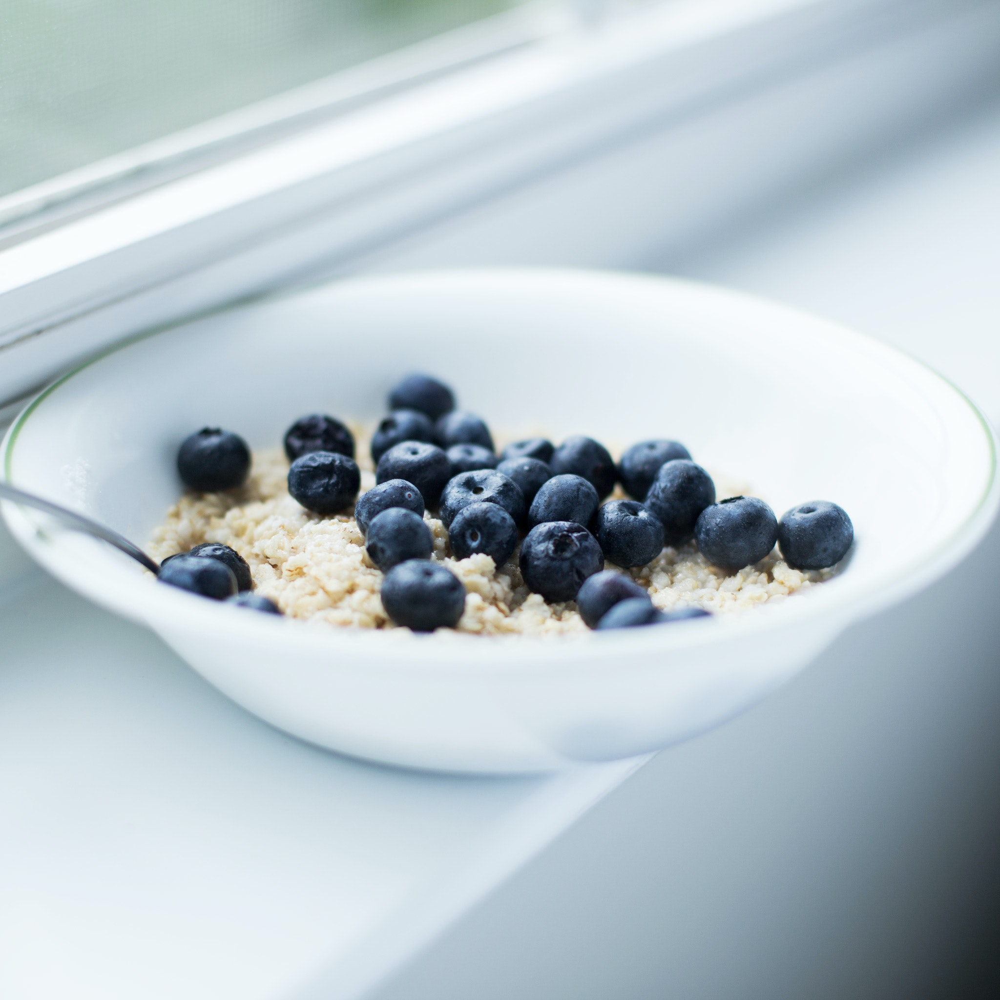
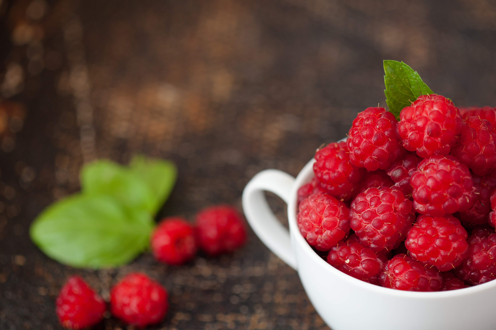

Strawberries are small, red berries with a sweet and
slightly tart flavor. They are juicy and often enjoyed fresh
or used in desserts like cakes, pies, and ice creams.

Blueberries are small, round berries with a
sweet and tangy taste. They have a deep blue-purple color and
are known for their antioxidant properties.
Blueberries are commonly used in baking, smoothies, and as a
topping for breakfast foods.

Raspberries are delicate, sweet, and tart
berries with a vibrant red color. They are delicious
eaten fresh, added to desserts, or used in jams and
preserves.

Blackberries are larger, dark purple berries
with a sweet and slightly tart taste. They can be enjoyed
fresh, used in baked goods, or incorporated into sauces
and desserts.